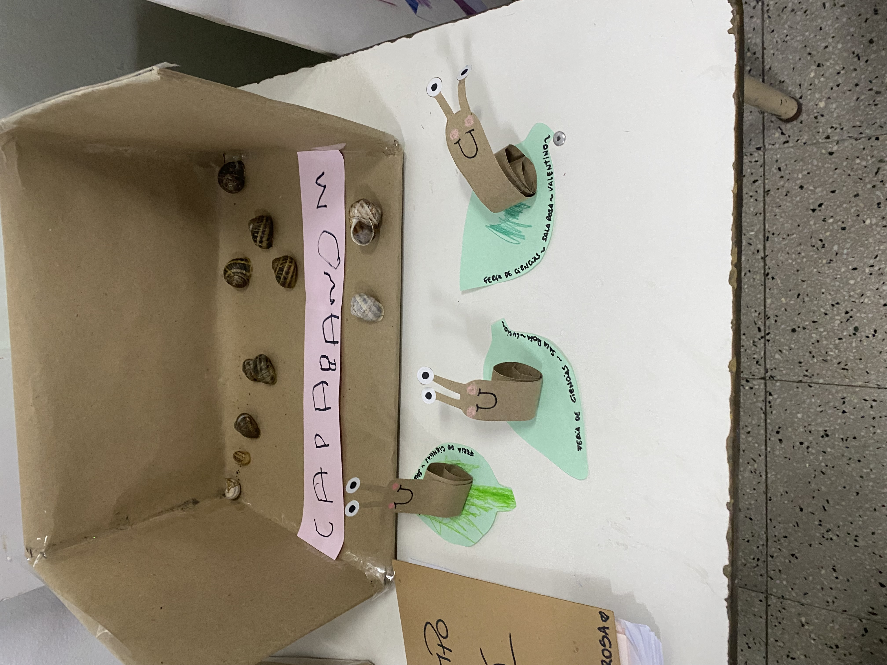

Jardin con Orientacion al Cuidado del Medio Ambiente
En este espacio, mostraremos las herramientas pedagogicas, como asi las actividades de exploración y conocimiento del entorno, Paseos por el jardín o la comunidad cercana
Exploracion
Crear
pintar
Aventura
